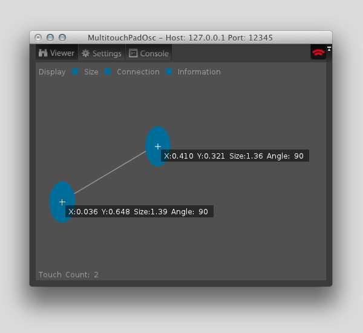
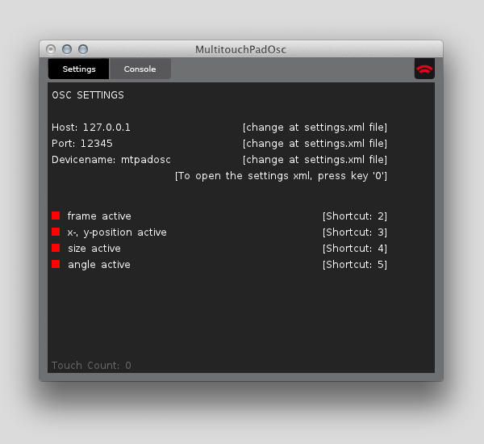
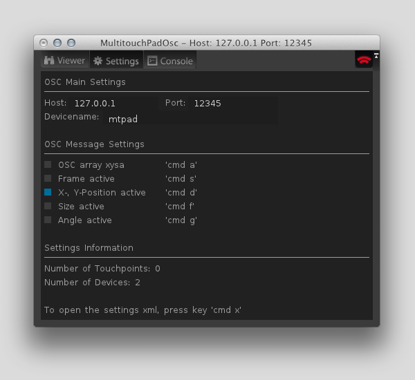
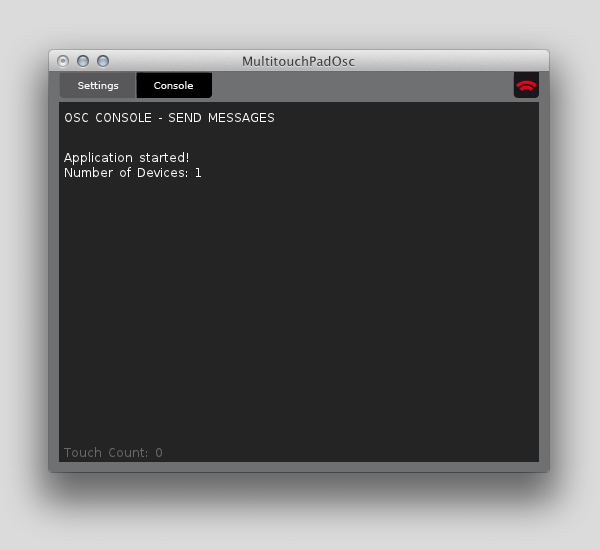
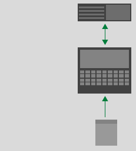
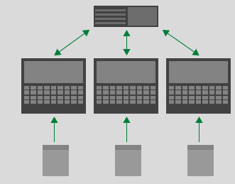
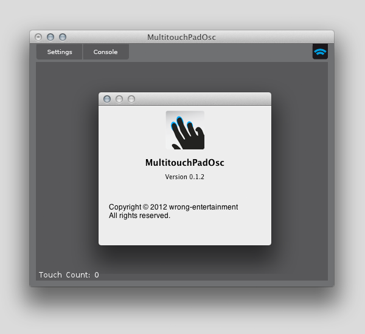

Table of Content
Overview
This application was developed to connect Trackpads/Magic-Trackpads to a Master Computer.
To connect the MultitouchPadOsc Application with a Master Computer, you need to set the OSC Host and Port settings.
After the app is started with the right settings, every capable OSC application can receive the messages.
Here is a Flowchart of the MultitouchPadOsc Application.
If you start first time the Application you see this window.

If you touch the Trackpad, the Application draw the Touchpoint-Position, -Size, -Angle and connection.
You can set the Viewer mode with the three Checkboxes (Size, Connection & Information)
 |
 |
 |
| Two Touchpoints | Three Touchpoints | Two Touchpoints with Informations |
Settings
On the settings tab you can change various properties.
The last settings are stored in the application and are available the next time you launch.
Also the number of the current trackpads is listed.
The main OSC settings are:
- OSC Host
The host ip where to send the application. - OSC Port
The port number through which the osc messages can be received. - Devicename
The name that is used as a start for the osc message.
- OSC array active
If active, then sent the x-, y-position, size and angle values. - Frame active
If active, then sent the frame value. - Position active
If active, then sent the x-, y-position value. - Size active
If active, then sent the size value. - Angle active
If active, then sent the angle value.
-

|  |  |
|
The default Settings properties. |
Send x-, y-position osc message. |
Send no osc message. |
Console
on the console tab, the last sent osc messages can be viewed

Scenarios
There are several scenarios to use that Application. Here, different scenarios are presented to illustrate the OSC-Network. Internal routing of osc messages is also possible, such as the use in multi-user applications.
Internal RouteSingle Hardware setup
 |
Internal routing on host 127.0.0.1 |
| On this machine we run the MultitouchPadOsc application to send OSC messages. | |
| Receive Touchpoints | |
| Magic Trackpad |
Single Master Route
Single Node Hardware setup
|  | Machine that receive the OSC messages |
| Send OSC messages | |
| On this machine we run the MultitouchPadOsc application to send OSC messages | |
| Receive Touchpoints | |
| Magic Trackpad |
Multi Master Route
Multi Nodes Hardware setup
|  | Machine that receive the OSC messages from the 3 sender machines |
| Send OSC messages. | |
| On this machines we run the MultitouchPadOsc application to send OSC messages. | |
| Receive Touchpoints | |
| 3 Magic Trackpad's |
Multitouch
"In computing, multi-touch refers to a touch sensing surface's (trackpad or touchscreen) ability to recognize the presence of two or more points of contact with the surface. This plural-point awareness is often used to implement advanced functionality such as pinch to zoom or activating predefined programs."
Source: Wikipedia
OSC Properties
If you've setting up your osc-types, you can receive a osc-message.
The only you need to know is the message-name to sync with your osc compatible software.
You can choose between 5 different types of osc-messages.
- osc array (xysa) x, y position, size and angle
- frame
- x, y position
- size
- angle
Here is a list of all messages.
Frame
Example: ['/mtpad/1/frame', i, 768] |
Send the current frame as an integer. Typetag: i |
X-Position
Example: ['/mtpad/1/x', f, 0.5] |
Send the x value of the finger. Typetag: f Value Range from: 0.0 to: 1.0 |
Y-Position
Example: ['/mtpad/1/y', f, 0.5] |
Send the y value of the finger. Typetag: f Value Range from: 0.0 to: 1.0 |
Size
Example: ['/mtpad/1/size', f, 2.3] |
Send the size of the finger. Typetag: f Value Range from: 0.0 to: 6.0 |
Angle
Example: ['/mtpad/1/angle', f, 90.0] |
Send the angle of the finger. Typetag: f Value Range from: 0.0 to: 180.0 |
Array
Example: ['/mtpad/1/xysa', f, 0.5,
f, 0.5,
f, 2.3,
f, 90.0]
|
Send the x-, y-position, size and angle as an osc package Typetag: ffff Value Range (same as x, y, size and angle) |
Here you can find a description for NAME and FINGER
NAME Set a name of your devicename you've set at settings.
FINGER-ID The finger id.
Processing Examples
You can find all available examples at the Repository gh-pages branch.
Example: oscReceive_basic.pde
FAQ
Why is no signal send OSC?
Thus, the application sends the OSC messages, if the icon placed at the top right is in active mode.
Where can i check the current version of the application?
At the Menubar you can click on "MultitouchPadOsc -> About MultitouchPadOsc"
